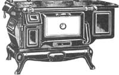
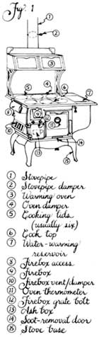
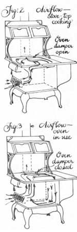
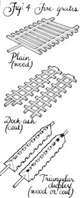
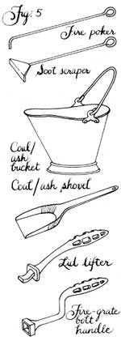

While rummaging through MOTHER'S 13,000-volume in-house research library not long ago, we uncovered (literally) an age-yellowed little slip of a book called The Secret of Better Baking . The period cover art showed a smiling homemaker with bobbed hair, a bowl of bread dough in one hand and a copy of The Secret of Better Baking in the other. Turning to the title page, we read that the book was "By Mary D. Chambers, B.S., A.M., Associate Editor of American Cookery , Author of Principles of Food Preparation, One-Piece Dinners , Etc., Etc., Etc. Copyright, 1925, Portland Stove Foundry Co., Portland, Maine."
This 59-year-old handbook turned out to be the most concise, entertaining source of wood cookstove selection/use/care/cooking knowledge we've seen-so, naturally, we decided to share parts of it with you. We think you'll agree with us that The Secret of Better Baking does reveal some valuable secrets of operating those somewhat finicky cooker-heaters and proves that some of the better things in life-such as the joys of preparing a delicious meal on a wood-burning cookstove-never change.
In one of the comedies of a generation ago, there is a love scene in which the hero picks up a leathery-looking object and makes a show of trying to bend it over his knee.
"What is it?" he asks.
The maid hangs her head in embarrassment, but replies courageously, "It's a pie. I made it."
"I'll eat it!" exclaims the delighted lover.
But the lady, with an eye to the future, recovers the pie and persuades the youth to prove his valor in less hazardous ways.
Baking a crisp, juicy pie or a deftly browned loaf of bread, or managing a Thanksgiving dinner is a worthwhile accomplishment. The kitchen range is close to the center of the home. It provides not only the main sustenance of life, but also needed warmth for winter's cold and plentiful hot water to encourage the highly regarded virtue of cleanliness.
Hundreds of cookbooks and collections of recipes by famous chefs witness the desire for variety in palatable and wholesome dishes. The implements of cooking have made equally rapid strides until they approach perfection. But a recipe book and the finest-equipped kitchen in the world do not make a cook. A good cook has learned how to handle her range so that it does her bidding without effort or "off days." And the cookbooks do not tell her. There seems to be very little help for those who are making their first acquaintance with a modern range. This booklet is an introduction to your stove-just a few hints to make the acquaintance ripen more rapidly and to help you to a fuller enjoyment of the hours spent in the kitchen.
No other article in the home means so much to the entire family as the kitchen range. Health and comfort are dependent upon it. No wonder a good housekeeper takes pride in the contentment of her family over the good things for the table that she provides: the extra heat in cold weather, the abundance of hot water on tap all the time, and many other things for which the modern range is equipped.
A good modern range is designed to get the greatest cooking and heating value out of the fuel used. When the range and chimney draft are right, a properly controlled fire will do all the work required, without wasting fuel.
It is therefore necessary to bear in mind that the first problem of better baking is an understanding of the fire. If a match is lighted, the flame shoots upward. The hot blaze causes a draft, drawing fresh air from below and supplying the oxygen necessary for combustion. The range simply makes use of this basic principle on a large scale.
To start the fire, then, have on hand plenty of free-burning fuel-dry paper and wood-cut small. A folded newspaper will not burn freely, but a few sheets, lightly twisted, make a good first layer. Then add a moderate supply of kindling wood, laid in loosely.
Before lighting, open the door or vent under the fire , the direct draft to the chimney (over the oven), the check slide at the base of the smoke pipe, and the damper in the smoke pipe. The purpose is to promote a free passage of air up through the firebox to the chimney by the most direct route.
Remember that no stove has a draft of itself. The draft is furnished by the chimney through the stovepipe, which obviously must be tight in all its joints.
Light the fire from below and allow it to get a good start. If it burns too slowly, it needs more oxygen, which can be supplied by opening the door wide under the fire. If it burns too fast, it will produce more smoke than the chimney can draw off, and the excess will be thrown out into the room. Partly closing the door under the fire will retard it. (The first fire in a new range usually causes a little surface smoke and oily odor. This is harmless and soon passes off.)
Before applying larger pieces of wood or coal, add a little more kindling. The grate should be well-covered with a brisk fire, both to support and ignite the larger fuel evenly and to prevent waste through the grate.
Never use kerosene to quicken a slow fire.
When the bigger fire has a good start, the oven damper may be closed.
The process of keeping up a good fire is merely one of adding more fuel, and occasionally "shaking down" to remove the ashes under the fire.
Do not allow ashes to collect close up under the grate. They will kill the fire and cause the hot coals above to burn out the grate. In fact, this is about the only way a grate is damaged in ordinary use.
Some housekeepers who depend upon the kitchen range for heating adjoining rooms or for continuous hot water maintain the same fire for months at a time. When not in use for cooking, the oven door may be left open to help heat the adjoining rooms.
If the draft of air through the firebox continues unchecked, the fuel soon burns out, and the top of the range gets red-hot-a bad thing for the stove. Frequent overheating causes warping and expanding and sometimes cracking of the cover. The fire needs to be curbed. This may be accomplished in various ways: by closing tight the door and slide under the fire, by partially closing the damper in the stovepipe or pushing in the slide near the stovepipe collar on top of the range, by opening the slide in the broiler door at the end of the range over the fire , or by tipping the lids or covers over the fire. The chimney keeps pulling for air, and the fire is checked by reducing the amount of chimney suction or by allowing the air to rush in over the fire , instead of through it. Closing the damper over the oven also checks the fire, but the real purpose of this damper is to send the heat around the oven on its way to the chimney.
The range should have a firebox large enough to keep a fire overnight. Under proper damper control, it will smolder all night and have sufficient life to rekindle quickly in the morning. Then too, it requires far more fuel to start new fires frequently than to keep an old fire. If it is found that the fire does not keep overnight, the trouble is due to one of two things: Either the draft is too strong, causing the fire to burn out, or too weak, causing the fire to die for lack of air.
No directions can be given in advance to cover every case, because chimney drafts vary so much, but there is a happy medium that can be determined by a little experimenting.
Generally speaking, the slide in the broiler door should be open at night, and the slide under the smoke collar should be pushed to the left to some extent.
In any case, it is essential in the morning to get rid of quite a large body of ashes which has accumulated in the firebox. At least half, and perhaps two-thirds, of the contents of the firebox usually consists of ashes and coals, which give no heat and must be removed every morning to reestablish a good fire for baking. A half revolution of the dock-ash grate will usually do this very nicely, and in fact this grate is designed for this particular purpose. If a stove is equipped with a plain grate, considerable shaking is necessary. The triangular grate may be handled similarly to the dock-ash grate, turning one-third or two-thirds or sometimes even a full revolution.
The ashes should be removed from the ashpit or -pan, both to improve the draft and to prevent injury to the grate.
It would be difficult to overemphasize the trouble that can be avoided by a regular and systematic cleaning out of ashes and dying embers under the fire. A fire may look bright on top and yet be almost out. Its body of clinkers and ashes has little heating value, and unless there are enough live coals on top to rekindle easily, it is better judgment to dump the fire and start anew.
Naturally, a deep fire will do more work than a shallow fire. Once well built-up, a deep fire can be maintained more easily and with less fuel than a fire that half fills the firebox. However, the box should not be filled above the top of the bricks, as there is danger of overheating and warping the lids.
The first question that enters the mind in regard to any range is "How well does it bake?" For that reason, this book is called The Secret of Better Baking.
But the range does many equally important things ... all at the same time. Broiling may be going on at the firebox end, boiling or frying in the center, simmering along the outskirts, baking in the oven, keeping dishes hot in the warming oven, heating adjoining rooms, and supplying a tankful of hot water. So long as there is a fire going, it should be cooking something or keeping cooked food warm. The old-fashioned siockpot is an example. It remained on top of the stove all the time, taking anything that would contribute to wholesome soups and stews. The stockpot can be used to advantage where canned soups are not easily obtained. Hot breakfast cereal, cooked the night before, will be improved if kept warm on the back of the stove.
Fill the teakettle before lighting the fire to get all the advantage of the first flames. When a new fire is built, the strong, direct draft up the chimney tends to draw the hot flames close under the center of the stove. Over a fresh wood fire the breakfast coffee sometimes boils quicker in the center of the stove than on the less-heated lids directly over the firebox. Perhaps the dish of water for the four-minute egg refuses to come to a boil. Why? Because the cook has not learned that water will boil quicker if a cover is put on the dish. A cover on the spider has the same effect and also keeps the stove cleaner. A little later, when the fire is going well, the whole top of the range is hot enough for boiling liquids in large kettles or heating the flats for ironing when electric ironing is not practicable.
Broiling should be prepared for in advance. The fire should be built up high and show an even surface of clear, red-hot coals. Good broiling requires intense heat for a short time, over coals that are past the flaming and gas-producing stage.
Open the oven damper so the smoke will go directly up the chimney. Also give the fire some draft underneath. Take off the two lids over the fire and sear over your sirloin, chop, or fish as quickly as possible, with frequent turning. This quick searing of the surface tends to prevent the escape of the juices and rewards the cook with a toothsome article of food impossible to produce in any other way. (A little olive oil on the steak before or after broiling gives a wonderful flavor.)
A coal or charcoal fire is the selection of the world's finest chefs for broiling.
Anything broiled should be served as soon as it comes off the fire. If that is impracticable, put it on a platter and keep it hot in the oven.
The real test of the range is in the baking. Nothing but individual experience is a safe guide in handling any particular range, but the general principle is the same.
When the fire is first started, the flames rush over the top of the oven and thence directly to the chimney. This heats the top of the oven, while the bottom remains comparatively cool. The entire oven must be healed and the body of fire must be sufficient to maintain an even heat for a considerable length of time. The oven becomes evenly heated by closing the oven damper, forcing the flames and smoke down one side and under the oven, entirely around and up again to reach the chimney.
Foods prepared for baking or roasting differ widely in the time and temperature required for cooking. A little practice will determine the correct temperature and best location in the oven for different bakes.
In a wood or coal range, baking is done directly on the bottom of the oven or on the raised rack. Never attempt to bake with the rack placed on the bottom of the oven.
Plates may be kept warm in the warming oven, but this is not all that may be done in it. Dried fruit, such as prunes, figs, and raisins, may be put to soak in water in the warming oven and left there for hours and hours, developing a richness and sweetness that cannot be otherwise produced.
One of the attributes of a good cook is a knack for serving hot dishes hot. This is not always easy when there is considerable variety in the menu. Here is where the warming oven may play an important part and cause the guests to wonder "how she does it."
For example, take a thick sirloin: If properly timed, it may be broiled just short of completion. Then, while the accompanying dishes are made ready to serve, put the steak on a platter, with plenty of butter, and place it in the warming oven. The heat contained in the meat combined with the heat contributed by the warming oven completes the cooking, and your steak is done to a turn, juicy and delicious, on a platter that will keep it hot. This is one of the secrets of the expert broiler of steaks.
Puddings, such as creamy rice pudding, Indian pudding, apple tapioca, steamed fruit pudding, and others, may be much improved by placing in the warming oven for an hour after baking or steaming.
Stale bread may be dried out in the warming oven for rolling and sifting, and if pulled bread and croutons for soups are put into the warming oven, they will cook of their own accord, without being looked after.
Jelly that has not jelled will sometimes jell after a day or half a day in the warming oven, and even fruit that is only half-ripe will ripen after a time in this convenient place, if a dish of water is set beside the fruit to keep it from drying out.
We all know the New England boiled dinner. Not everyone knows the "Atlantic" baked dinner. About an hour and a half before dinnertime, put into the oven, heated as for bread baking, a four-to five-pound chicken or a cut from a leg of veal or lamb, and a dish of scalloped potatoes. Keep the temperature even. Three-quarters of an hour later, add three large carrots, scraped and cut in halves lengthwise, placing them on the rack of the pan that holds the meat. In another fifteen minutes, put in six tomatoes, in an earthen baking dish. By the time the tomatoes are done-fifteen or twenty minutes-a baked dinner for six persons will be ready to serve. After removing the meat and vegetables from the oven, if you place in it six fruit patties, or six cup-custards in a pan with an inch or more of water, these will be ready to serve for dessert.
Popovers, cream puffs and éclairs, angel cake and sponge cakes are easier to bake successfully if put into a cool oven and the temperature gradually increased.
Flour mixtures that are of a special shape which should be preserved, like the fancy braided loaves and Parker House rolls, ought to go into a very hot oven so that a crust will immediately form to preserve the shape, and then the baking may proceed at a low temperature.
All meats, fish, and poultry are also better cooked at a high temperature to begin with to hold in the juices-then a gradual reduction of heat. Baste frequently.
Bread, cakes, pies, and vegetables may be baked at uniform temperature, or with a slight gradual increase or decrease.
In many cases, cooking started at a low temperature, gradually increasing, will develop a different taste from the same food started at high heat. Boiled custards, if made with cold milk, are more delicate than if the milk is added very hot.
Scrambled eggs or omelets cooked on a fiercely hot pan from the start take on a richer flavor than when started on a rather cool pan. It is necessary to work fast, however, as overcooking on a very hot pan produces a result that resembles rubber in texture.
Those who enjoy a really good cup of coffee will agree that there is a surprising difference in taste. A cup of real coffee has much more to it than hot water and dark brown color. It should be good if you start with a good blend (ground at home just before using) and are not too economical of the quantity used. For some reason, coffee made in one-cup portions lacks the character of the larger brew. Adding the shells of fresh eggs or a raw egg beaten up with the coffee before boiling both enriches the flavor and produces a much clearer beverage.
Coffee tastes quite different when started with cold or hot water. It is the general opinion that a better result is obtained by mixing with a little cold water and bringing to a boil-then adding boiling water and setting back a few minutes to settle.
Cereals take on a different flavor, depending on whether they are started in cold or hot water. Which is the better flavor is a matter of taste.
All good cooks know the most important secret of all: While the bake is on, make a job of it.
No two conditions of range and draft are exactly alike-in fact, they will differ in your own home, depending on the weather or the direction of the wind. A set of exact rules for one situation would not fit another. In any case, there must be a good body of fire to hold the oven at a cooking temperature. The articles that are being baked or roasted may do better on the rack than on the bottom of the oven, or vice versa.
But no definite rules made for one situation would be at all valuable when compared with the stored-up knowledge gained from your own experience -remembering how the oven acted before under similar conditions, and making it serve you better and better with every day's acquaintance.
The foregoing hints are confined very largely to the mechanical operation and care of the range. So much depends upon the preparation of foods for cooking that the temptation to add several pages of palatable recipes is very strong. Recipes are easily obtained, however, and the real purpose of this booklet is to suggest ways of getting consistently better results with the range and draft as they are. If the range works well all the time, both the stove and the draft are all right. If the range has off days, the chimney draft needs attention. A cleaning out may help, or perhaps an extension of the chimney to a point where the air currents will improve the draft.
If you are getting good results only part of the time, you should get much better results the rest of the time by making a study of the conditions of fire and draft when the stove is at its best.
If the range fails to give satisfaction the greater part of the time, look for serious defects in the range itself or in the conditions of its installation or operation. If it is cracked or broken, it is past its usefulness. Its operation becomes rapidly more wasteful and irritating, and the early installation of a new range will be good economy and good sense.
The kitchen range usually does its work so well that its virtues are taken for granted. When it breaks down from old age, the whole family realizes what an advance has been made since the days of kettles hung in fireplaces and cuts of meat slowly roasted on wooden spits.
EDITOR'S NOTE: Although the Portland Stove Foundry-the company that originally published The Secrets of Better Baking -is no longer in business, its descendant, the Portland Stove Company, restores and sells the classic Atlantic cookstoves. For literature on the parts and stoves they offer, send $2.00 and your name and address to Portland Stove Company, Fickett Rd., North Pownal, ME 04069.
|
 |
 |
 |
|
 |
 |
|